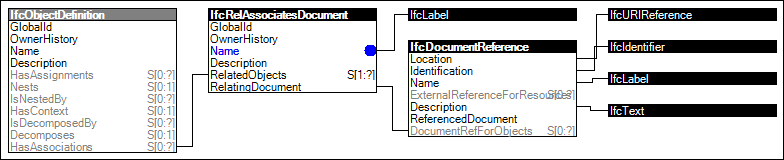

Link to this page
Link to this pageThe concept Document Association describes how objects or object types can have associated documents indicating external files. Documents may be referenced in their entirety such as to capture product brochures, data sheets, multimedia content, or thumbnail images. Contents within documents may be referenced from any object, and may be used to synchronize information in other files such as work schedules for project management applications.
Typical document meta data, such as issue date, editor, and similar, can be captured with the association, the document content however remains with the external files.
Figure 19 illustrates an instance diagram.
 |
Figure 19 — Document Association |